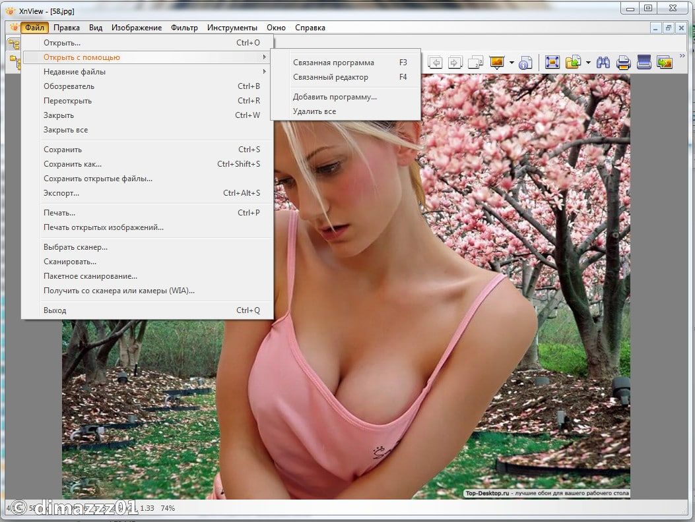

XnView – это вьювер фотографий с приятным интерфейсом. Встроенный менеджер файлов расположен слева. Кроме него есть панель инструментов из 2-х строк, ниже – поле с содержимым папки. Интерфейс крайне прост, все самые необходимые инструменты под рукой.

Достоинства XnView
После того, как программа обнаружит в папке фотографии, они будут представлены как миниатюры. Если щелкнуть на фото, то в предпросмотре с правой стороны покажется её увеличенная копия. Поддерживается большинство графических форматов.
Вы можете просматривать изображения, фото и установить изображение в качестве фона на рабочий стол, функция пакетного переименования снимков, пометки, конвертации, можно отправить фотографии на e-mail.
Последовательная обработка файлов. Пожалуй, эту функцию стоит рассмотреть подробнее. Если зайти последовательную обработку в меню, то вы увидите огромное колличество возможностей. Конечно, то фотошопа этой программе далеко, но можно, к примеру, обрезать фото до определенного размера или усилить яркость, добавить водяной знак. Ничего не тормозит, все работает быстро.
Недостатки XnView
В отличие от, например, Picasa, XnView не ищет изображения и фотографии, для начала просмотра нужно указать папку с файлами.
Значительные функциональные ограничения по сравнению с более продвинутыми вьюверами. Это можно объяснить отличной производительностью приложения.
Выбрать фон или настроить интерфейс не получится. еще о фотошопе…
Эту гляделку люблю за то, что и файлов кучу разных видит (видео с фотика, записи с диктофона) и изображения смотреть удобно, в моей галерее много картинок без фона, и благодаря XnView их не надо долго искать.
Нравится данный вьювер в первую очередь своим красивым интерфейсом, многофункциональностью, то есть возможностью просмотра различных форматов изображений, конвертации и т. д. Давно искал такую программу.
Спасибо отличная прога давно искал
Быстро загружает фотки, строит дерево папок. Вобще не тупит, не зависает. Хороший просмотрщик с расширенными возможностями для редактирования фотографий и просмотра видео файлов.
Вьювер XnView подойдет и простому пользователю, и любителю поковырять фотографии, изменить яркость, контраст или наложить свой водяной знак — логотип. Много разных возможностей
То что не ищет сама фото это не минус, это скорее плюс. Зато дубликаты все на компе может собрать. Больше, конечно, браузер для просмотра изображений, но и слету можно подкорректировать.
Установила год назад, редактирую фото и просматриваю все изображения практически все. Не виснет, быстрая, панель инструментов удобная, понятная. Одни плюсы. Установила быстро и без проблем на ноут.
Легкая, но нужная программа. Удобно, что в ней предусмотрено много форматов для разных целей. Удобно просматривать фото на ПК. Редактор изображений на высоком уровне, работать нравится.
Подскажите программа XNVIEW с удобным интерфейсом а то что то не понятно
Удобная программа, в Пикасе работать не могу, не комфортно, а тут можно быстро и без проблем менять размер и формат фото, для меня минусов вообще нет. Легко понять суть и принципы. Советую скачать.
Благодаря этой интуитивной программе которая может просматривать разные форматы изображения я могу спокойно заниматься своими делами, и не волноваться за поиски каких то не стыковок.
Приятная , красивая , удобная программа. Просматриваешь свои фотографии и что-то сразу улучшаешь или обрезаешь. Выбор операций , конечно , не велик , но для любителя достаточно.
На моем виндовс семерке сразу встроен стандартный Windows LIve, с помощью которого открываются изображения, но он не может того, что позволяет XNVIEW, поэтому я и пользуюсь этой программкой. Удобство главный ее козырь.
Установлена XNVIEW у меня на компе уже довольно давно, больше года назад нашел ее упоминания в интернете и решил скачать. Раньше активно пользовался ею, но в последнее время я редко ее запускаю. Но в целом программа отличная, преимуществ явно больше.
Функции, которые чаще всего используются вы найдете именно здесь. Это программа позволяет существенно экономить время при редактировании фотографий, при этом качество абсолютно не уступает другим редакторам.
Этот вьювер для меня выделяется тем, что может просматривать огромное количество различных форматов. Даже аудио, видео и векторные от Иллюстратора форматы, пусть и в очень ограниченном варианте.
Думаю одно из главный преимуществ XnView это не просто поддержка более 300 форматов, а еще конвертация распространенных расширений фотографий. Так же присутствуют фильтры и различные эффекты.
Удобная программ. Особенно мне, лично мне, нравится возможность обработать фотографии прямо в программе. Очень удобно, не нужно других программ. Пользуюсь ею постоянно и очень доволен.
Моя любимая программа для просмотра фотографий. Радует скорость её работы, не тормозит, фотографии по 3 мегабайта грузит за пол секунды. Версия от версии радует всё больше и больше.
В целом программа интересная, да же если чего то и не хватает, производительность и функционал вас явно порадует. Я данную программу использую для уменьшения объема фотографий.
Отличная программа. Всего в ней в меру — и наворотов, и функциональности. Мне она подходит полностью — есть возможность просмотра и редактирования фотографий, создания слайд шоу и ресурсов требуется для нее не много. То, что надо для меня.
Подскажите кто нибудь, у XNVIEW есть пакетная обработка фотографий? У меня есть около ста фоток их все нужно уменьшить до 300 пикселей в ширину, по одному это делать слишком долго и сложно.
Да, есть в ней пакетная обработка фото и скажу я вам сценарий действий там не малый. Я их все не использовал, но пару из них серьезно помогли мне и не мало сэкономили, как времени, так и нервы)) Рекомендую.
Хорошая программка, которой пользуюсь очень часто, когда нет необходимости применять Фотошоп, с которым, если честно, не совсем разобралась, еще только на стадии освоения. А здесь все просто — не требуется особого обучения, чтобы пользоваться этой программой, для меня она очень удобна!
Хороший простой вьюер, похож на Пейнт, но функционал явно побольше. Огромный плюс — окно сделано по типу Проводника, не надо искать снимки по отдельным папкам и открывать их в программе. Есть базовые функции редактирования. Не Фотошоп, конечно, но и комп не вешает. Для стандартной обработки фото вполне достаточно, а места и ресурсов экономит немерено.
Сначала пытался изучить фотошоп — безрезультатно, мне было очень тяжело освоить кучу этих функций. Установил себе эту программу заместо фотошопа, и все освоил быстро и без проблем.
Недавно установила xnview, быстро все изучила и теперь работаю в ней спокойно. Трудностей при освоении программы не возникло, как например, с другими программами для дизайна.
Нравится быстродействие этого Вьювера. Очень часто прибегаю к к установке водяных знаков и элементарной обрезке фото. Тут это все можно сделать буквально в пару секунд.
В этой программе xnview, можно легко отменить ненужные действия в истории редактора и вернуться либо в изначальную позицию, либо на несколько действий выше. Это очень удобно при работе
Удобный интерфейс программы позволяет быстро и качественно обработать фотографию и так же быстро и без лишних усилий ее конвертировать. Пользуюсь этой программой недавно, все устраивает
Слабых сторон у данной программы видно слабо, потому что она изначально не предназначена для широкого функционального графического «робота» выполняющего множество функций. К примеру я скачал ее месяц назад и активно использую ее в повседневности и доволен.
Хорошо подойдет тем, у кого на ПК имеется внушительный объем различного рода фотографий, которые просматриваются регулярно. Именно для такой цели и создана XNVIEW. Сам ею пользуюсь частенько, когда залил с фотика кучу снимков например. А в плане функционала она слаба.
До покупки сканера пользовалась xnview как обычным браузером для просмотра фото. Но теперь весь процесс сканирования идет через xnview, есть возможность выбрать формат будущего скана и сделать тонкую настройку.
Поставил себе эту прожку просмотрщик, как бы это странно не звучало, для чистки компа. За годы работы в галереях накопилось много одинаковых фото, xmview нашел все дубликаты. Приятный интерфейс и хороший функционал.
Использую программу не только для просмотра фотографий, но и для добавления текста и эмблемы на изображение. Есть возможность создавать сценарии и автоматизировать этот процесс.
Немаловажный момент программы xnview — правильное взаимодействие практически со всеми моделями сканеров, включая допотопные. Использование данной программы позволяет получить более качественные изображения, чем с большинством штатных программ
Кстати говоря, xnview годно держит спецификации файлов. К чему привязан — открывает покорно. А что не привязано — даже не пытается открыть во что бы то ни стало. Это очень полезная черта для служебной программы. Не лезет поперек юзера «я лучше тебя знаю, как надо»
У XNVIEW самый удобный проводник, на просмотре сразу видно есть ли фон у картинки, при работе с цифровыми скрапнаборами это очень полезно. Много лет пользуюсь только этой гляделкой
Главное то что в этой небольшой программе можно просмотреть все имеющие на компьютере фотографии в виде привьюшек, это очень удобно и компактно, лично я этой программой пользуюсь уже второй год.
Я постоянно была в поисках хорошей программы для того что бы смотреть фотографии. И наконец то я ее нашла. После установки XnView, я начала пробовать редактировать фотографии, не сразу, но у меня получилось. В итоге обработанная фотография мне очень понравилось, более того, появился интерес еще посидеть и дальше поработать над картинками. А Xnview аналог есть ли какой нибудь данной программы или нет?
Давно искала программу для просмотра фотографий с легким и понятным интерфейсом. Могу сказать, что после установки XnView меня ни разу еще не разочаровал. Радует также, что можно просматривать большое количество изображений разных форматов.
Скачала на ноутбук эту программу для работы с фото, сначала показалась достаточно примитивной, но теперь уже поработав понимаю, что очень хорошая и нужная программа. В основном в ней редактирую фото по мелочи, это не полноценный фотошоп, но небольшие поправки сделать можно на ура!
Легкая и быстрая программа с поддержкой кучи видов файлов, множество режимов просмотра фото, наличия конвертации форматов изображения, ну а «джентельменский набор» для небольшого редактирования так вообще делает эту программу наиболее часто используемой на моем компьютере. Кстати, программа поддерживает и плагины, если кому-то захочется большего.
Программа с действительно простым и понятным интерфейсом, простая, но в то же время все необходимое есть. Миниатюры показывает отлично, если работать помногу — одни плюсы, отлично тянет, не виснет. Одна из моих любимых программ.
На сегодняшний день, да и уже почти год для меня эта программа лучшая в своем роде. Приятный и простой интерфейс в котором не нужно сидеть и разбираться и читать кучу всяких мануалов как в ней правильно работать. Я освоил ее буквально за два дня и с тех пор она мне полюбилась. Работаю с большим количеством графики и она справляется со всеми поставленными задачами. Вот к примеру последовательная обработка файлов или когда загружаешь большое количество изображений она превращает их в миниатюру и видно все изображения. Вот многие считают ее недостатком что для просмотра изображений нужно указывать путь к папке, а для меня это наоборот плюс. Ведь если она автоматом загружала все изображения, что у меня на компьютере это был бы хаос. Могу сказать одно XNVIEW хороший помощник в работе с изображениями и имеет отличную. производительность, ни разу не зависала и не было сбоев в работе.
Более детального интерфейса я не встречал так как успел поработать во множестве программ но, такой удобной как XnView я не встречал, программа может просматривать множество форматов и что не мало важно и векторы тоже.
Мне нравится программа, легкая и простая. Как-то установила Пикасу, так она мне сильно тормозила систему, пришлось удалить. Здесь еще нравится пакетная обработка, все быстро и без проблем.
XnView вполне годный менеджер фоток. Простой интерфейс и ничего лишнего. А то, что не сканирует файлы при запуске, так по мне это наоборот, достоинство. Пикаса мне как раз только из-за этого не нравилась.